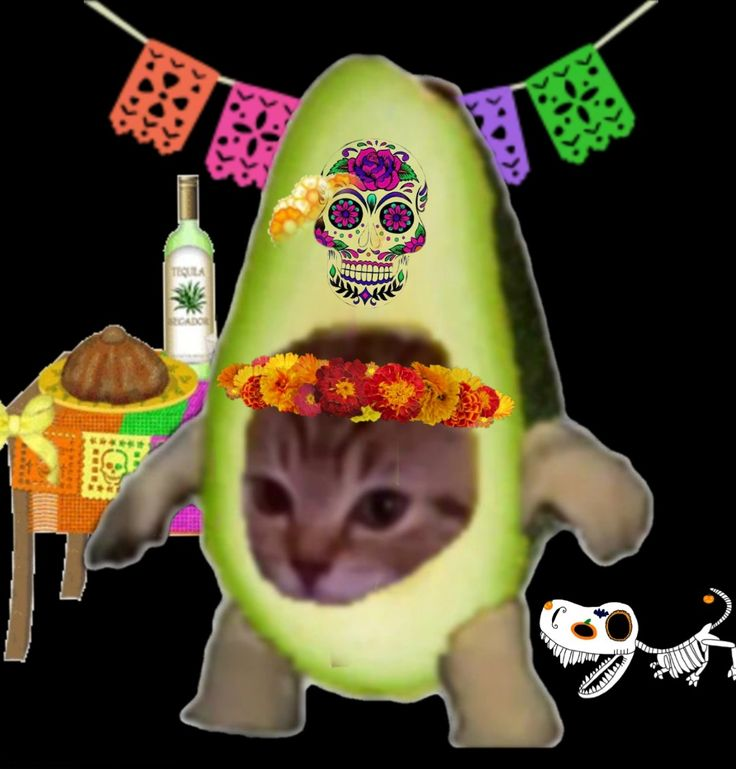

La Catrina llegó a la escuela,
buscando alumnos para llevar,
pero al ver tanta tarea,
¡se comenzó a preocupar!
El maestro estaba enseñando,
cuando la Flaca apareció,
con su libreta y lápiz en mano,
¡hasta la tarea pidió!
«Vámonos», dijo la Muerte,
«que ya es hora de partir»,
pero al ver tantos exámenes,
¡prefirió mejor huir!
Los alumnos festejaron,
pues la Flaca se marchó,
pero olvidaron un detalle:
¡la tarea les dejó!
Y desde aquella mañana,
la Catrina no volvió,
porque entre tantas materias,
¡hasta la Muerte reprobó!